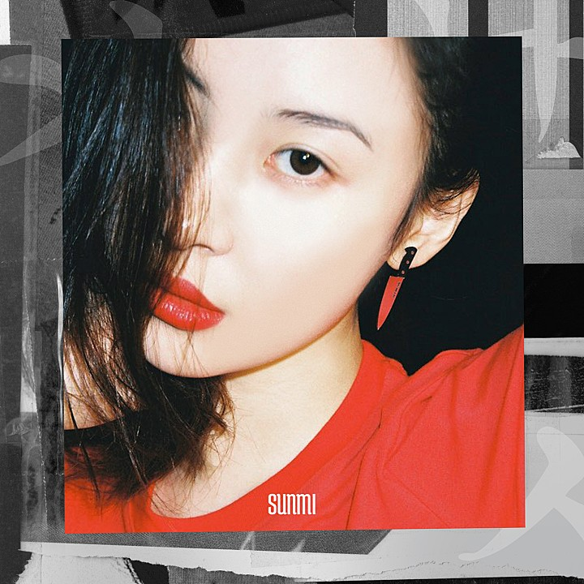

너의 싸늘해진 그 눈빛이 나를 죽이는 거야 커지던 니 맘의 불씨 재만 남은 거야 왜 시간이 약인가봐 어째 갈수록 나 약하잖아 슬픈 아픔도 함께 무뎌지는 거야
좋아 이젠 너를 잊을 수 있게 꽃같이 살래 나답게 Can't nobody stop me now no try me
나의 향길 원해 모두가 바보처럼 왜 너만 몰라 정말 미친 거 아냐 넌
왜 예쁜 날 두고 가시나
날 두고 떠나가시나 그리 쉽게 떠나가시나 같이 가자고 약속해놓고 가시나 가시나
날카로운 날 보고 넌 고개 숙일 거야 가시 난 내 모습이 더 깊숙이 파고들 거야 eh 이미 꺾은 거잖아 굳이 미안해하지 마 정말 꺾인 건 지금 내가 아냐 바로 너야 좋아 이젠 너를 잊을 수 있게 꽃같이 살래 나답게 Can't nobody stop me now no try me
나의 향길 원해 모두가 바보처럼 왜 너만 몰라 정말 미친 거 아냐 넌
왜 예쁜 날 두고 가시나
날 두고 떠나가시나 그리 쉽게 떠나가시나 같이 가자고 약속 해놓고 가시나 가시나
너는 졌고 나는 폈어 And it's over 다시 돌아온다 해도 지금 당장은 나 없이 매일 잘 살 수 있을 것 같지 암만 생각해봐도 미친 거 아냐 넌
왜 예쁜 날 두고 가시나
날 두고 떠나가시나 그리 쉽게 떠나가시나 같이 가자고 약속해놓고 가시나 가시나
